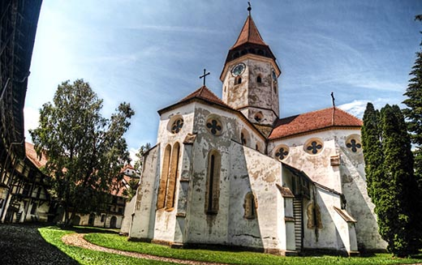

Cetatea Prejmer
Biserica evanghelică fortificată din Prejmer, comuna Prejmer, județul Brașov, a fost construită în secolul XIII pe baza unei vechi bazilici romane datată din secolul al XII-lea. Ansamblul bisericii evanghelice fortificate, format din biserică, incinta fortificată, cu drum de apărare, două turnuri, două bastioane, turn de poartă este monument istoric
Cetatea din Prejmer este legată de cavalerii teutoni, nu numai datorită momentului istoric al așezării acestora în Ţara Bârsei, ci chiar prin zidirea bisericii realizată de cavalerii ce au pus şi temelia.
Prima atestare a localităţii Prejmer este legată de Cancelaria Ungariei şi de regele Bela al IV-lea, care la 1240 cedează biserica „cu toate veniturile și drepturile” ei, mănăstirii din Citeaux, Bourgogne, abaţia ordinului cistercian, pentru folosul obștesc al întregului ordin. Documentul explică legătura puternică, atât administrativă cât și arhitectură, cu mănăstirea cisterciană de la Cârţa.
Atunci când se fac aprecieri despre stilul arhitectonic al bisericii din Prejmer, pe lângă evidenţa stilului gotic timpuriu, uneori apare și atributul „burgund”, specific abaţiei ordinului cistercian. Biserica este ridicată pornind de la un plan de cruce greacă, cu braţele egale, centrată de un turn octogonal. Fiecare braţ al clădirii era compus din două travee, una pătrată, iar cealaltă poligonală. Corul bisericii era flancat pe ambele laturi de câte două capele rectangulare. Planul iniţial al crucii grecești a fost modificat prin intervenţiile din secolul al XVI-lea.
Altarul poliptic este pictat pe ambele părţi și a fost realizat în secolul al XV-lea. Este apreciat ca unul dintre cele mai valoroase și mai vechi altare gotice din România. În faţa pericolului năvălirilor turcești, Sigismund de Luxemburg, Împărat al Imperiului romano-german, rege al Germaniei și al Ungariei, a ordonat fortificarea Ţării Bârsei.
Fiindcă Prejmerul era prima localitate care primea loviturile turcilor veniți prin pasul Buzău, după ce regele Sigismund de Luxemburg a dispus ridicarea unor sisteme de apărare în Țara Bârsei, a început fortificarea bisericii prin ridicarea unei incinte înalte și puternice înconjurată de un șanț lat de apă. Cetatea, cladită în formă de cerc, avea ziduri groase de 3-4 metri și înalte de 12 metri, bastioane, porți de fier și poduri care se ridicau. Un drum de strajă folosea pentru aprovizionarea luptătorilor de la crenele. Pe lângă gurile de foc fixate în ziduri, în cetate se afla un dispozitiv de luptă neobișnuit: vestita „Orgă a morții”, mai multe archebuze care trăgeau simultan. Zgomotul produs era neobișnuit, iar „orga morţii” provoca panică și pierderi grele în rândul asediatorilor. Dispozitivul se păstrează la Prejmer.
Ca și alte monumente din Transilvania, biserica fortificată de la Prejmer a suferit numeroase intervenții, dar în urma restaurării întreprinse de Direcția Monumentelor între 1960 și 1970 ea și-a căpătat forma inițială. Constituie cel mai bine păstrată și cea mai puternică biserică-cetate medievala din Estul Europei. În 1999, biserica a fost înscrisă pe lista patrimoniului cultural mondial UNESCO. Dedicată hramului "Sfânta Cruce", biserica a fost ridicată pe un plan central, în cruce greacă, modificat prin intervențiile din secolul al XVI-lea. Initial, clădirea era compusă din patru brațe egale dispuse în jurul unui careu centrat de un turn octogonal. Fiecare braț era compus din câte două travee, una pătrată și alta poligonală, corul bisericii fiind flancat pe ambele laturi de câte două perechi de capele rectangulare. Înrudirea cu spiritul și formele utilizate pe șantierul bisericii mănăstirii cisterciene Cârța, iar pe de altă parte, cu cele prezente la biserica evanghelică din Bartolomeu-Brașov, ambele ridicate după mijlocul secolului al XIII-lea, permite datarea bisericii evanghelice din Prejmer în a doua treime a secolului al XIII-lea și încadrarea sa în aceeași ambianță stilistică. În biserică se găsește cel mai vechi triptic din Transilvania, datat între 1450-1460.